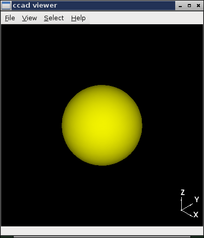

ccad is a text-based mechanical CAD (computer aided design) tool. It is a python module you import within a python file or from the python prompt. Once imported, you can create and view mechanical objects.
A simple example may help. From the ipython prompt, I can type the following:
In [1]: import ccad
In [2]: s1 = ccad.sphere(2.0)
In [3]: v1 = ccad.view()
In [4]: v1.display(s1)
After the third command, a window appears, and after the last command, it looks like this:
I’ve created and displayed a sphere of radius 2.0. Now, suppose I want to 3D print this sphere. From the prompt, I can type:
In [5]: s1.to_stl('sphere.stl')
And, I have my sphere in .stl format, ready to ship to a 3D printer. ccad lets you do much more than creating a sphere. To learn more, read on.
This document and the examples shown provide an overview of what’s available in ccad. Consult the API (easily available with pydoc) for more options and better descriptions of the passed parameters.